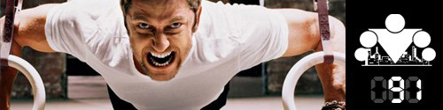

100 Дневный воркаут
<==== Вернуться к оглавлению
День 91. Последний день ПРОДВИНУТОГО блока

Сегодня у нас будет последний информационный пост, потому что уже завтра начинается ТУРБО блок, где… где будут интересные вещи, но всему свое время.
До конца программы осталось всего 11 дней... В нашей жизни всё хорошее рано или поздно заканчивается, и наша программа не является исключением из этого правила. А это значит, что через пару недель выйдет последний видео-блог, и я поздравлю всех участников (особенно тех, кто успешно дошёл до конца) с выпуском =) С самого начала главная цель нашей программы заключалась в том, чтобы дать вам базовый набор навыков и знаний, используя который вы сможете дальше двигаться самостоятельно. И, как мне кажется, благодаря всем этим инфо-постам и ответам на ваши вопросы эта задача будет успешно выполнена.
В рамках нашей программы было просто невозможно дать информацию обо всём, что есть в фитнесе и воркауте. Можно сказать, что я только приподнял занавес, за которым скрывается новый удивительный мир. Тут и огромное количество упражнений, и разные виды спорта/фитнеса, и тренировочные программы, методики и подходы, и о вопросах питания тоже не стоит забывать. Я надеюсь, что после 100 дней вам тоже захочется узнать больше о себе, своих возможностях и о том, чего вы можете добиться. Потому что на самом деле воркаут не только изменяет ваше тело, он изменяет и ваш дух. По мере работы над собой вы становитесь более целеустремленными и более уверенными в своих силах, а уверенность - это ключ к успеху в самых разных сферах жизни, уж поверьте =) Есть такая поговорка, "если хочешь изменить мир, то начни с себя", и можно поздравить вас с отличным началом ;)
Но 100 дневный воркаут
- это только начало пути. Конечно, вы подняли свои силовые показатели и начали меняться внешне, но уверен, что большинству из вас захочется большего, а это значит, что нужно будет ставить новые цели и уже самостоятельно находить пути их достижения. К счастью, мы живем в век информационных технологий, и в интернете есть масса полезной и качественной информации, главное, научиться находить проверенные источники. Я могу вам гарантировать, что кто-то до вас уже пытался достичь тех целей, которые вы перед собой ставите, и уже поделился своим опытом со всем миром.
На данный момент я не знаю точно, будет ли когда-нибудь у
100 дневного воркаута
продолжение продвинутого уровня, потому что сейчас у меня определенно недостаточно опыта и знаний, которыми мог бы поделиться. Но вот то, что мы буду продолжать делать 1-2 запуска ежегодно, шлифуя программу, это совершенно точно =) (И некоторые участники уже заметили существенные различия между этим и предыдущим запусками ;))
Кстати, будет очень здорово, если после окончания программы вы начнете делиться своими знаниями и опытом с другими людьми, с родственниками, друзьями, знакомыми. Может быть даже с незнакомыми людьми, которых впервые увидели на площадке (я знаю, некоторые из наших участников уже так делают ;) и это здорово!). Потому что один из ключевых принципов воркаута - "каждый учит каждого", я поделился знаниями с вами, вы с кем-то ещё, кто-то ещё ещё с кем-то и так далее по цепочке. И это действительно работает, потому что с каждым днём увеличивается количество людей, занимающихся воркаутом! Я уверен, что 500 участников для 100 дневного воркаута - это далеко не предел, и в следующий осенний запуск мы попробуем собрать под своими знамёнами уже 1000 человек со всего мира!
В общем, рано пока ещё впадать в ностальгию по поводу окончания программы, всё таки впереди целых 1,5 недели, включая неделю
ТУРБО-БЛОКА
, которая будет отличаться от ПРОДВИНУТОГО блока так же сильно, как ПРОДВИНУТЫЙ блок от БАЗОВОГО ;)
======> День 92. Добро пожаловать в ТУРБО блок!